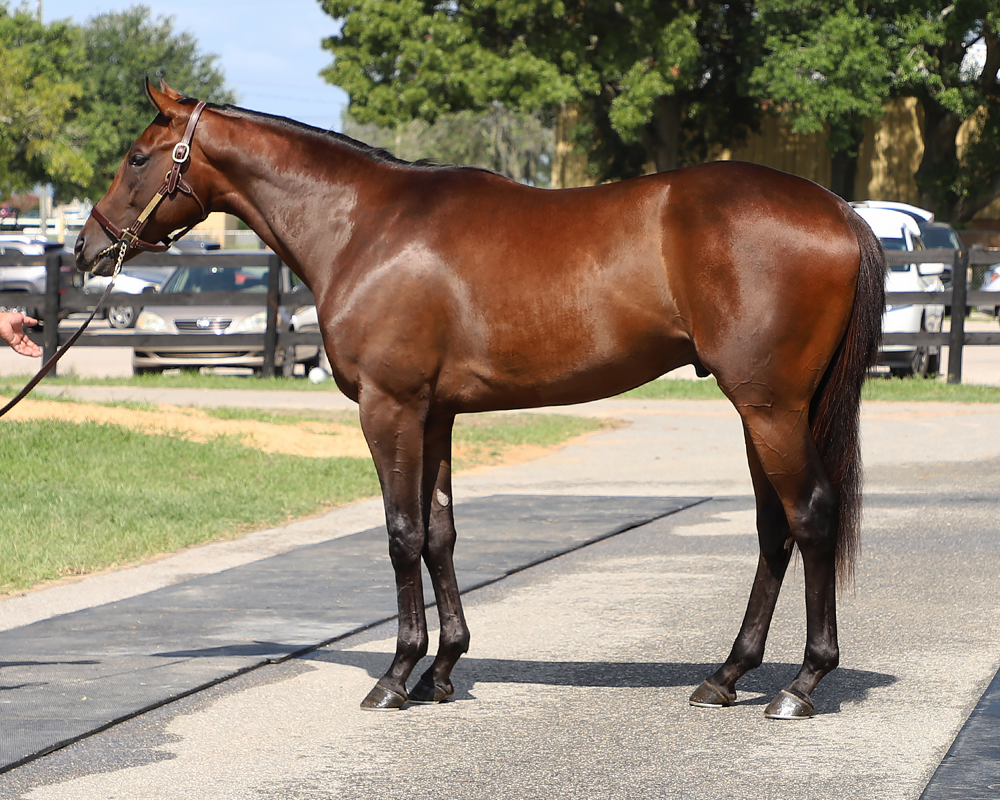

THOROUGHBRED · OBS HIP 545
Redemption Hour
Bay colt · Foaled March 10, 2023 · Kentucky
- Sire
- Connect (Curlin — Bullville Belle)
- Dam
- Magsamelia (Mineshaft — Rare Elegance)
By Grade 1 winner Connect and out of eight-time winner Magsamelia ($332,442). His extended female family includes champion two-year-old filly Storm Song, winner of the Breeders’ Cup Juvenile Fillies (G1), and Grade 2 winner Diamond Omi.